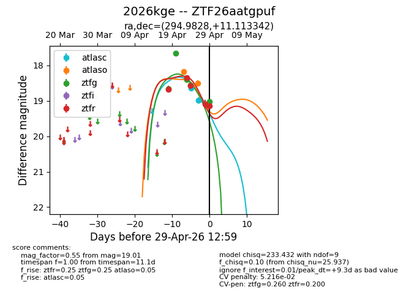
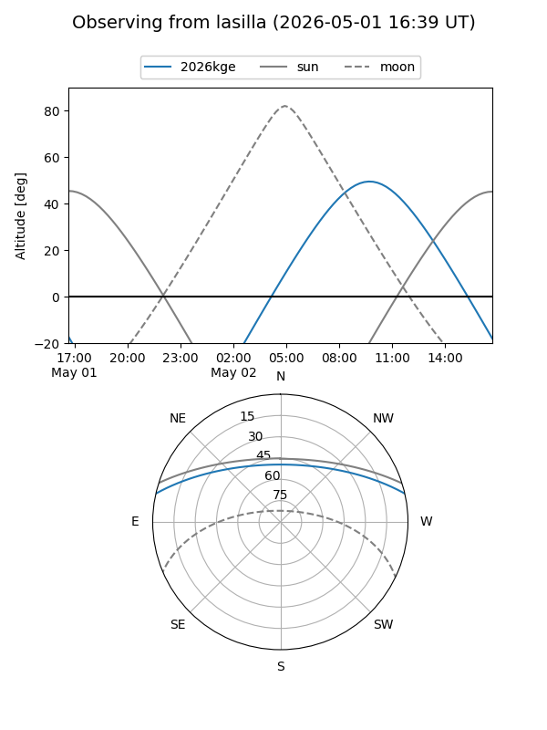
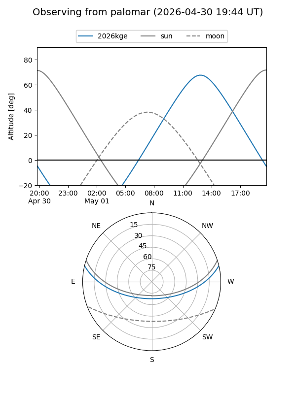
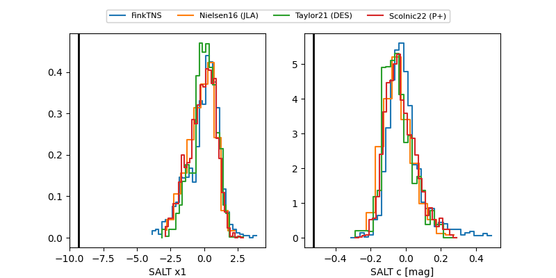

2026kge
Target 2026kge at 2026-04-29 13:03
Aliases and brokers:
FINK: link
Lasair: link
ALeRCE: link
TNS: link
YSE: link
alt names
ZTF26aatgpuf (ztf,fink_ztf)
2026kge (tns,yse)
Coordinates:
equatorial (ra, dec) = 294.9828,+11.11334
equatorial (HMS+DMS) = 19:39:55.87,+11:06:48.03
galactic (l, b) = (48.4019,-5.48103)
Flags:
likely cv
Photometry:
last atlasc=18.98, atlaso=18.50, ztfg=19.01, ztfr=19.14
2 atlasc, 2 atlaso, 5 ztfg, 5 ztfr detections
Lightcurve

Visibility


Additional plots
